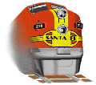
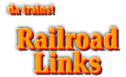

-- Back to da trains! --

©2000 blanchard design, all rights reserved
Railroad Links - 06-01-28


Links to train related sites that I found interesting. Note that it is almost impossible to keep up with links that change names and/or disappear. Long ago I decided that it was best to refer people to link sites that did keep up with them instead of trying to keep up with them all myself. The links below may be obsolete by now. I try to remove the ones that don't work any more.
LINKS TO MORE LINKS
RAILROAD LINKS
STEAM INFO
NARROW GAGE
RAILROAD MUSEUMS AND TOURIST LINES
REFERENCE, MANUFACTURERS and HOBBY RESOURCES
-- Back to da trains! --
©2000 blanchard design, all rights reserved